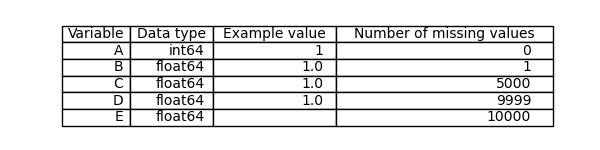
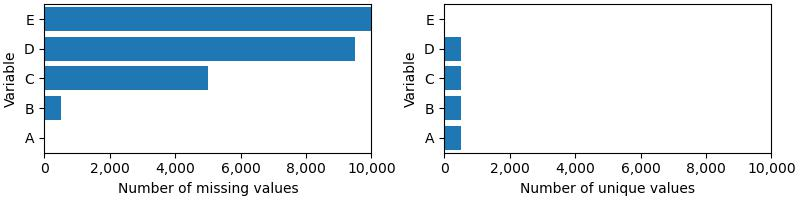

This is a simple report, which shows how the results of data quality and profiling investigations may be output in plain text, as a webpage or as a Latex document.
Use the paragraph() function to add additional general paragraphs of text.
Table 1 shows the number of rows and columns in the dataset.
| Dataset | Number of rows | Number of columns |
|---|---|---|
| missing 1 | 10000 | 5 |
Table 1: The size of the dataset.
Table 2 shows descriptive statistics for each variable in the dataset.
| Variable | Data type | Example value | Number of missing values |
|---|---|---|---|
| A | int64 | 1 | 0 |
| B | float64 | 1.0 | 1 |
| C | float64 | 1.0 | 5000 |
| D | float64 | 1.0 | 9999 |
| E | float64 | 10000 |
Table 2: The data type, an example value and the number of missing values in of each variable.
Table 3 shows the same descriptive statistics, but as an image.
Table 3: The data type, an example value and the number of missing values in of each variable.
Figure 1 shows other descriptive statistics for each variable.

Figure 1: The number of values and number of unique values in each variable.
Thank you to A.N. Other for their help. This report was created using the vizdataquality Python package.